|
|
HELP FIND THE FOLLOWING LOCATIONS
PAGE 47
GIDEON’S WAY: Boy With Gun (Jeremy Summers: May 1965)
Establishing shots of London:
Tower Bridge, SE1

Unknown 1 – Market
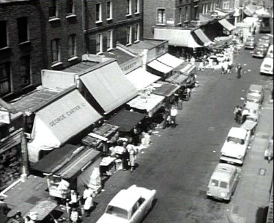
Wentworth
Street, E1 – Market
(Identified Stephen Carter, July 2007)
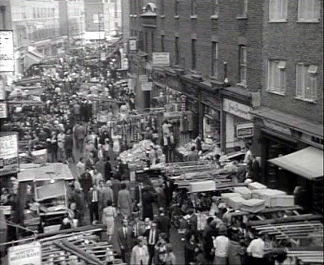
Unknown 3 – Chris Kirk (Howard Knight) is cornered by a gang of youths, Charlie in a back lane. Mick Murphy (Roger Foss) is shot. Doctor Kirk (Anthony Bate) goes to the crime scene to attend to the injured boy. Detective Inspector Smith (Tony Thawnton).
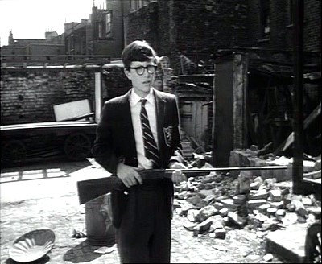
Chris Kirk (Howard Knight) runs into the street, but has to turn back when he sees two of the gang members talking to a police man.
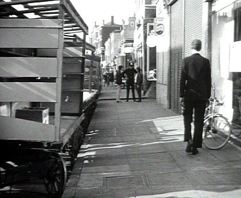

Unknown 4 – Chris Kirk (Howard Knight) find a phone box and calls his father about the accidental shooting.

Unknown 5 – A shocked Chris Kirk (Howard Knight) walks along the railway tracks with the gun,
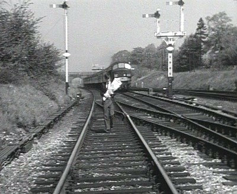
Commercial Street, E1 – Doctor Kirk is interviewed by Gideon at the Commercial Street Police Station.

Unknown 6 – Chris Kirk (Howard Knight) leaves his house with the gun.
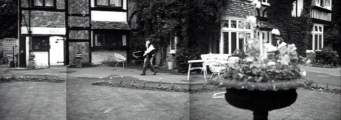
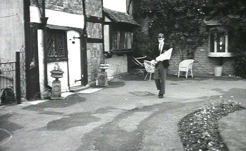
 The house from LS Page 15
The house from LS Page 15
Orient Wharf, Wapping High Street, E1 – Chris Kirk (Howard Knight) walks past Orient Wharf.
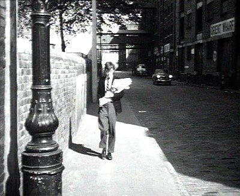
Unknown 8 – He sees some lorries at a greasy spoon and hides inside one of them.
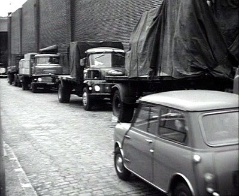 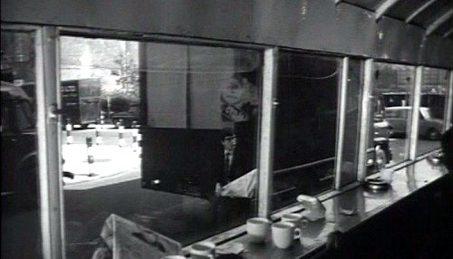
C22 – The lorry heads North on the motorway.


Somewhere
along Harper Lane, Radlett – Chris Kirk (Howard Knight) spends the night sleeping in a stack of
hay before setting off again.
(Identified by Alan Field, September 2007)
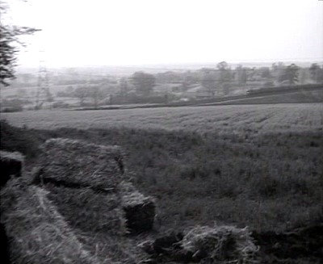

Unknown 10 – Chris Kirk (Howard Knight) finds a farm and steals some milk it is here he first meets Vince Kelly (Michael Craze).
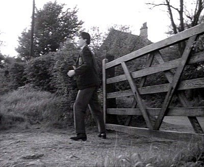

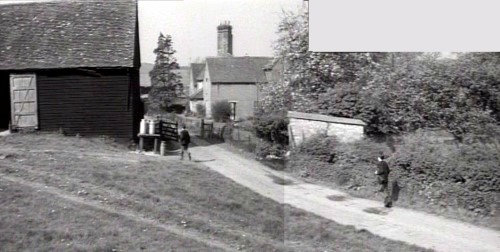
 Geoff Dodd - “I think the farm
could be Summerswood Farm on the east side of Summerswood Lane, just north of
Buckettsland Lane. The shape of the building seems right and the distinctive
chimney is present but none of the out buildings match unfortunately. It would
appear to be in the right area though, with O16
being very near by.”
Geoff Dodd - “I think the farm
could be Summerswood Farm on the east side of Summerswood Lane, just north of
Buckettsland Lane. The shape of the building seems right and the distinctive
chimney is present but none of the out buildings match unfortunately. It would
appear to be in the right area though, with O16
being very near by.”
O16 – Chris Kirk (Howard Knight) and Vince Kelly (Michael Craze) are on the run from a farmer who has found them in his barn. The two boys run across a field and jump into the back of a van parked by a roadside café.

East India Docks Road, E14 – East India Dock’s Road – The lorry carrying the two boys arrives in London. Chris Kirk (Howard Knight) and Vince Kelly (Michael Craze) jump out before the dock gates (Mallet Street).


97 Wapping Lane – The boys are spotted by a police man and are chased through the streets.


Unknown 12 – Chased past warehouses
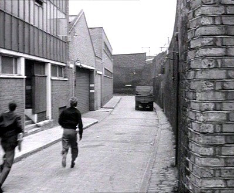
Alley
(demolished) off Choppin's Court, E1 – Chase down an alley, where they
hide.
(Identified Stephen Carter, July 2007)

photo: Stephen Carter

photo: Stephen Carter

photo: Stephen Carter
Unknown 14 – Finny goes around to Tim Murphy’s (George Sewell) house.
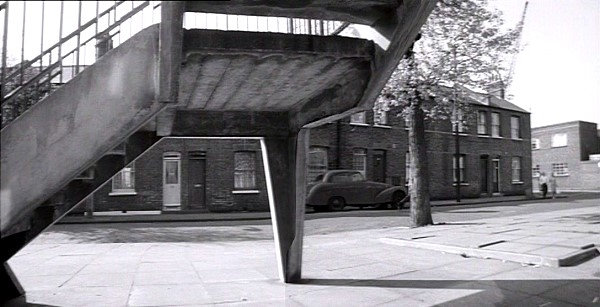
St. Pancras Way, NW1 - Keen’s car is sent to Fenton Street to intercept Murphey.


Unknown 16 – Keen’s car make a U-turn.
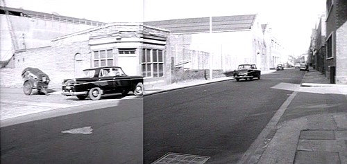
Three Colts
Corner, E2 (leading to footbridge, now closed)– Tim Murphy (George Sewell) Chris Kirk (Howard
Knight) and Vince Kelly (Michael Craze) chases the boys across a bridge…
(Identified Stephen Carter, July 2007)
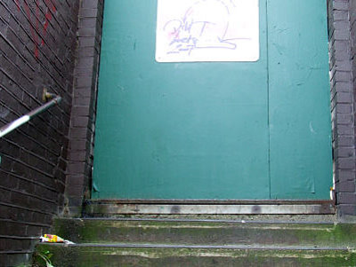
photo: Stephen Carter
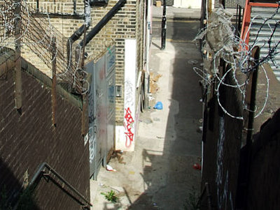
photo: Stephen Carter
Wapping High Street, E1 – …and through the streets to the Colonial Wharves and Chris Kirk stands his ground in one of the warehouses.


Unknown 18 – Keen reports to Gideon
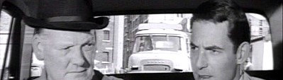
Unknown 19 – Gideon himself decides to drive down to the wharfs.

Gun Wharves, Wapping High Street – They end up at the docks.
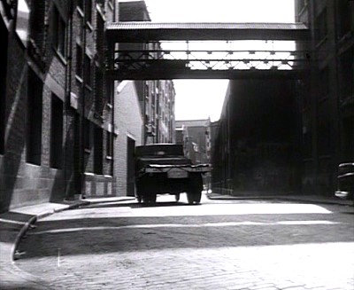

photo: Stephen Carter
 From Stephen Carter
From Stephen Carter

Think you know a spot? Need a bigger image? Email me.
< Previous | Index | Avengerland | Next >
Copyright © 2003 Anthony R. McKay